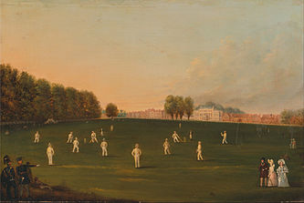
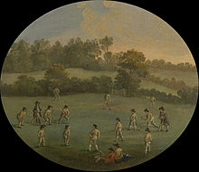
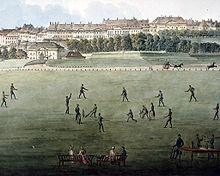

Current Cricket Rankings History of Cricket Notable Athletes How to Play
The sport of cricket has a known history beginning in the late 16th century.

International matches have been played since 1844 and Test cricket began, retrospectively recognised, in 1877.
Cricket was probably created during Saxon or Norman times by children living in the Weald, an area of dense woodlands and clearings in south-east England that lies across Kent and Sussex.

In 1744, the Laws of Cricket were codified for the first time and then amended in 1774, when innovations such as lbw, middle stump and maximum bat width were added.
